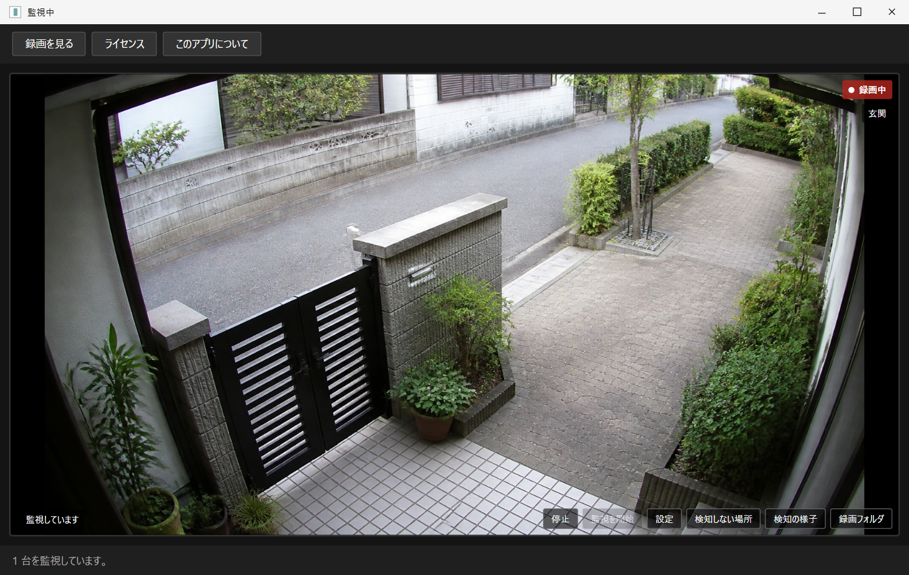

見張り番
ネットワークカメラを、見る・録る・見返す。 通常は自動探索でカメラを選び、見つからない場合だけIPアドレスを指定して追加できるWindowsアプリです。
公開準備中 最終更新 2026-08-16 ダウンロード・販売はまだ開始していません

Product overview
必要な場面だけを、あとから探せる
市販の防犯カメラの多くはONVIFという共通規格に対応している。にもかかわらず、 パソコンのソフトから繋ごうとすると高い確率で詰まる。IPアドレスの調べ方、 ポート番号、ONVIF用アカウントの作り方がメーカーごとに違い、 そもそもONVIFが初期状態でオフになっている機種もある。 「規格に対応している」ことと「繋がる」ことは別だった。
見張り番は、そこを一つずつ潰していくアプリ。 起動すると自動でネットワーク上のカメラを探し、映像を表示して、 動きがあったときだけ録画する。
- 2560×1440
- 25.00fps無加工保存、実機1機種で確認
- 19時間17分
- 連続動作、コマ落ち・空白0(別PCで実測)
- 1,278件
- 自動試験、失敗0(2026-08-16)
- 0件
- 利用状況の送信。映像は全てPC内に残る
映像は、このPCの外に出ません
家の中を録る製品なので、ここは推測ではなく実測で書く。2026年8月16日、 製品コードを全部走査したところ、外部へ通信する口(HttpClient)は3か所だけで、 宛先は3つとも利用者自身のカメラの住所だった。利用状況の送信(テレメトリ)や、 こちらのサーバーへの自動問い合わせは0件(読んだ上で0件)。
ただし正直に書くと、都合の良い部分だけを出すつもりはない。カメラのパスワードは Windowsのユーザー範囲で暗号化して保存しているが、カメラのユーザーIDは平文で保存している。 また、アンインストールしても試用の開始日とライセンスキーがレジストリに残る (消し方は同梱文書に記載)。
画面を見ながら進める説明書
現行画面の配置・文言に準拠した説明図を、工程ごとに掲載しました。画像を押すと原寸で確認できます。 IPアドレス、ID、パスワード、ライセンスキー、私的なカメラ映像は使わず、 すべて公開用のデモ状態で再現しています。アプリから撮影したスクリーンショットではありません。
使い始めるまでの4段階
- ZIPを「すべて展開」する。 中から直接起動せず、書き込み可能な場所へ置きます。
- カメラを選ぶ。 起動すると自動探索が始まり、メーカー名と型番が表示されます。
- カメラ接続用のIDとパスワードを入れる。 スマートフォンアプリのログインとは別の場合があります。
- 録画に使う画質を選ぶ。 映像が表示されたら監視が始まります。
今の状態
出荷前の検証中。自動試験は2026年8月16日、汚れの無い作業ツリーで1,278件・失敗0・省略0を確認した。 人手による受入試験は173項目のうち84項目が完了(合格80・対象外4)、残り89項目は未実施。 自動再接続、無音になった接続の検出、日付をまたぐ録画、 2560×1440 / 25.00fpsの無加工保存は実機で確認済み。 別のPCでは19時間17分の連続動作(録画571本、すべて25.00fps、コマ落ち・空白0)も確認したが、 これは出荷判定に必要な正式な24時間soak試験とは別枠の測定で、24時間soakはまだ実施していない。
一方で、実機で動作を確認できているカメラはまだ1機種だけ(TP-Link C520WS)。 2台目はH.265専用機だったため、動作確認ではなく 「対応できないカメラの実例」として設計に反映される結果になった。 URL形式の一覧には他社の書き方も入れてあるが、そちらは未検証。 対応機種を広く見せるより、確かめた範囲を正直に出すことを優先している。
まだ済んでいないこともある。初版では未署名で配布するため、インストール時にWindowsの警告が 表示される場合がある(代わりに配布ファイルの照合用の値を公開する予定)。ライセンスの保護も 「悪意ある攻撃を完全に防ぐ」段階ではなく「通常の使い方をする善意の利用者が正しく購入できる」 段階の実装になっている。
国内のソフト配布サイトVectorでの公開を予定していて、使用許諾や試用期間まわりの実装は済んでいる。 Vectorの作者登録は2026年8月16日に完了した(申込は8月7日、3段階のうち1段目)。 ソフト自体の登録(出品)はまだ未着手で、これが2段目にあたる。 正式な販売ZIP、24時間の正規soak試験、人の目・耳で行う残り89項目の受入試験、 別PCでの確認を終えてから配布する。